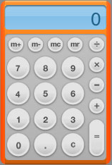
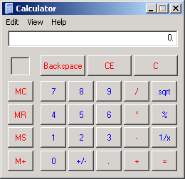

A small pet peeve: the use of goto in written English instead of go to. Is this the legacy of BASIC?
Zeroth Post!
A Usenet posting sent me to a short article by Edsger W. Dijkstra titled Why numbering should start at zero.
Now, I have never used a programming language that wasn’t zero-indexed (like Fortran), but neither have I adopted the habit of numbering lists starting with zero.
I think the difficulty I have with zero-indexing is that in normal English we refer to items in a list by ordinals: “first, second, third, … nth.” But translated into Common Lisp, we get the slightly disorienting:
(first *list*) ≠ (nth 1 *list*)
(that’s a not-equals sign for the Unicode-deprived)
Now, I understand that nth is zero-indexed, just like elt, and that’s consistent with how most other programming languages work. But then why don’t we have zeroth?
I guess the simple answer is that zeroth isn’t normally thought of as a real word, except occasionally to refer to something added to a sequence “before the first.” My Websters Collegiate doesn’t even define it. Of course, the copy I have is from 1973; Webster’s online does include zeroth. Has zeroth entered the English language because of computers?
When Everything Is Software
I’m currently enjoying Ray Kurzweil’s The Singularity Is Near. I’m only about half-way through it, and despite some inital scepticism I find his data more than a little convincing.
In the future Kurzweil sets out, everything will be a form of information. The bodies we inhabit and the world we interact with will be dynamically created by billions of nanobots controlled by powerful computers and strong A.I. This led me to a thought: In the future, everything will be software. Your house. Your coffee. Your brain. All software.
Scary, no? I don’t know if I wholly believe Kurzweil yet, but the next few decades — his timeline for the appearance of the singularity — might be a very interesting time to be a software developer.
Voted Off the Planet
So I have been dropped from Planet Lisp, scarcely two months after being added. I wonder if that’s a record of some kind? Apparently, the maintainer found my tone too didactic and my knowledge too lacking. Fair criticisms both, but I meant no harm. I’m certainly not trying to set myself up as a Lisp guru. I’m just trying to learn things, and one of the ways I do that is by writing out explanations as if I’m teaching myself. Publishing them on the web is the fastest way to find out where I’ve made mistakes.
I only started this blog a few months ago, so I’m still exploring the form and what I want to do with it. I won’t let the infamous Common Lisp “community” scare me way just yet. I’ll continue writing, I hope others will continue reading.
Perl in Lisp 0.1
Hello, Lisp world! This is my first released Common Lisp code. Perl in Lisp is a Common Lisp interface to the Perl 5 API. It allows you to run a Perl interpreter embedded inside Lisp and evaluate Perl code. It does not require any C wrapper code — the API definitions are done with CFFI and the rest is pure ANSI Common Lisp.
In response to the obvious question, “Why on Earth would you want to do such a thing?” my best answer is “Why not?” I thought it would be fun. It ended up being more difficult than I expected — the Perl API is not for the faint of heart, nor for those unwilling to dig through source code. But it does work.
This was also an experiment to see if I could follow two “best practices” of software development — literate programming and unit testing — at the same time. It wasn’t always easy, and it tripled the amount of work I had to do, but the end result was definitely worth it. Thanks to the literate source, I understand what all of the code does. Thanks to the unit tests, I know that it works.
This is a beta release. It can evaluate strings of Perl code, call Perl functions, and convert between Lisp and Perl types. Callbacks from Perl to Lisp are not yet supported. Some Perl modules may not work, particularly if they depend on external C libraries.
See the project page for implementation compatibility notes, download links, and documentation.
Potentially, it could be very useful. CPAN has over ten thousand modules for doing all sorts of obscure things. Say you want to output an Excel spreadsheet from your CL application. Just use Spreadsheet::WriteExcel.
Jeremy Smith started a similar project for embedding Python: PythOnLisp.
Consistently Inconsistent
Apple’s new Dashboard Widgets bother me. Not in a usability sense — they look quite useful, especially if they can be brought in and out of view quickly. What bothers me is that every widget looks completely different. Reading about user interfaces, the one clear mantra appears to be “consistency, consistency, consistency.” The Dashboard has inconsistency all over the place. Widgets have different colors, different borders, and even different GUI controls. Furthermore, the whole concept of a Widget breaks the consistent idea of what an application is.
Now, I’m not a Mac user. But a friend who is explained why she likes the Widget concept: things that are different should look different. So, I asked, does that mean that a window containing a web browser should look different from a window containing a word processor? Yes, she said.
This certainly makes writing window managers a lot more challenging. But it makes sense. A music player and an FTP client have almost nothing in common, so why should they have similar interfaces?
What it boils down to is this: some people “see the interface” and others don’t. A programmer or designer can look at an application interface and think, “Okay, that’s a combo box, that’s an adjustable frame border, that’s a button.” But users only see words, colors, and shapes. They know that clicking the mouse on certain words or shapes will produce a given effect, but they rarely understand the difference between, say, an icon on the desktop and a button on the toolbar. Why do you double-click the former but single-click the latter? Who knows. I’ve seen plenty of regular computer users who double-click everything, just in case.
(Update 26 July 2007: On second read, that was pretty rude of me. My point is not that users are stupid — it’s that no one should have to think about the difference between an icon on the desktop and a button on the toolbar. You should just be able to get on with whatever you’re doing.)
Getting back to Apple’s Widgets, they are all specialized tools. Each does a single task — calculator, address book, weather report, etc. They are not general-purpose applications, so it doesn’t make sense to put them on the same footing in the interface. For example, I almost never use the Windows Calculator because it takes too long to launch and the interface — using the default system font and colors — is hard to read. In contrast, the Dashboard calculator has a larger display and uses standard calculator symbols for multiply and divide rather than * and /. It is less consistent with the rest of the Mac GUI, but is more consistent with our notion of calculators.
So perhaps interfaces should be consistently inconsistent. Turns out there’s even a paper about this, written by Jonathan Grudin in 1989: The Case Against User Interface Consistency.
The Naming of Namespaces
Or, How the Lisp-n Shall Inherit the Earth
Humans like to name things. Like ourselves, Homo sapiens, Latin for “Primate that has taken leave of its senses.”
Then there are engineers. Engineers like to name things too. Like SCSI, pronounced “scuzzy.” Or WYSIWYG, pronounced “wizzy-wig.” Or TTY, pronounced (I couldn’t believe this at first) “titty.”
Then there are programmers, who are singularly uncreative when it comes to naming things. With Apache’s Gregor Samsa class as a brilliant exception, programmers tend to give their variables and functions dull, predictable names like string, number, or do_not_use_this_variable_ever.
Of course, in most programming languages a given name can refer to one thing and one thing only for ever and ever until your program crashes and dumps core Amen. To get around this sad limitation, programming boldly took advantage of the eighth-century’s greatest typographical innovation, lower case letters. Thus we have the Dada-esque beauty of case-sensitive code:
Widget* WIDGET = new Widget.widget();
As languages got more complex, adding first-class functions and first-class types, there were more and more things that needed to be called by the same name. Few programming languages picked up the idea of meaning based on context. So hierarchical namespaces were born:
java.awt.event.ActionEvent myEvent = new java.awt.event.ActionEvent();
My tendinitis starts acting up at the mere sight of that.
Common Lisp to the rescue! As many have pointed out, CL is not just a Lisp-2 (functions and variables in separate namespaces), but more of a Lisp-n. It has many overlapping namespaces — functions, variables, type specifiers, block names, tagbody tags. With a few macros and a hash table, one can easily add a new namespace to the language. For example, testing frameworks like FiveAM and LispUnit put test names in a separate namespace. A programmer using these libraries doesn’t have to think about the extra namespace. Just type symbols and Lisp will do the right thing.
I like to think of this approach as parallel namespaces. Everything is kept neatly separated, without endless qualifiers attached to every symbol. Macros determine how symbols will be evaluated — or not — in a block of code.
This isn’t perfect. For one thing, there’s no canonical way to add a new namespace to a language. Some macros require names to be quoted symbols, some not. Some use keywords. Sometimes an unquoted symbol will pollute the namespace of the current package; sometimes it won’t.
The solution, to my mind, would be something that lets us do this:
(define-namespace foo)
(defmacro-with-namespaces my-macro ((arg1 foo))
. . . )
Then my-macro would always treat its first argument as a symbol which is not evaluated, internally binding arg1 to whatever value the given symbol holds in the foo namespace. I’m not going to attempt to implement such a beast just now, but I’m sure an experienced macro-writer (i.e. someone else) could dash it off in half an hour.
The Three Types of Computer User
I think nearly all computer users can be divided into three broad categories based on the way they think about computers.
The vast majority of computer users are application-oriented. They have training and experience exclusively with commercial software. They understand concepts peculiar to computers such as files, folders, saving, and deleting. They live in a WYSIWYG world; although they may be aware that what they see on the screen is not an entirely accurate representation of what the computer is actually doing, they are not interested in understanding hidden implementations. They have learned how to map their thinking onto the capabilities of the applications they regularly use, and they accept whatever limitations that thinking may impose. They are pragmatic, learning as much as they need to get their work done. A new problem requires a new piece of software. Spreadsheet “programmers” fall into this category, as may some programmers who work primarily with application scripting tools such as Microsoft Visual Basic for Applications. Nearly all commercial software is targeted at this group of users, who can be considered “computer-literate.”
The second largest group consists of goal-oriented users. These users focus exclusively on the goals they want to accomplish and neither understand nor care about the software they use to accomplish those goals. This could be called the “I just want to type a letter” group. They only see the final product. They do not care about, for example, the difference between a word processor document and a PDF image of that same document, so they do not understand why they can make textual edits to one and not the other. They could be described as “computer-illiterate,” even if they work with computers on a regular basis. Many very intelligent people, scientists and scholars, fall into this category. They are frustrated by the limitations of the software they use because they do not understand the reasons for those limitations. Though they may use common terms such as “files,” they typically map those concepts onto their real-world metaphorical analogues, resulting in confusion. (“Why can’t I keep this picture in my email file?”)
The third and smallest group of computer users — ironically, the original computer users — is comprised of hackers. Hackers are computer-oriented computer users. They have learned how to think like a computer, to understand the processes the computer goes through. They favor small tools (e.g. the command line, shell scripts) over large applications because they want to be in precise control of what the computer is doing at all times. They comfortably work with data in “raw” formats such as text files. This does not necessarily mean they are tied down with minutiae of implementation; often they can work at much higher levels of abstraction than other users. Hackers tend to seek out the abstract patterns inherent in whatever end result they are working towards, then implement those patterns in the computer. A new problem rarely requires new tools, merely a new application of existing tools. They will create whatever new tools are needed to bring the computer up to the level of the problem, rather than trying to adapt the problem to fit the computer. On the other hand, their solutions tend to be brittle, with a lot of exposed complexity that makes them unsuitable for non-hacker users.
Nearly all commercial software is application-oriented, while most open-source software is hacker-oriented. Very little software, in my experience, is truly goal-oriented.
The Only Data Structures You’ll Ever Need
Perl was the first programming language I really liked, the first language that made programming fun.
Perl has three basic types: “scalars” for atomic values, arrays for ordered sets, and hash tables for unordered sets. (Yes, there are others, but those are the popular ones.) I quickly discovered that these three types can be combined to produce most any data structure you might need. Need an ordered list of records? Use an array of hashes. Need a tree of named elements with attributes (e.g. XML)? Use nested arrays with hashes in them.
These basic types can also be conveniently mapped to external data. A CSV file can be represented as an array of hashes. A database table can be an array of arrays, an array of hashes, or a hash of hashes, whichever you prefer.
Python and Ruby both followed in Perl’s footsteps here. (Python calls them “lists” and “dictionaries.”) Lisp, predating all these new-fangled “scripting” languages, includes lists, arrays, hash tables, plus a whole raft of other built-in types. This is one of those areas that makes Common Lisp difficult for the beginner to grasp. When should you use a plist, an alist, or a hash table? When should you use arrays and when should you use lists? The answers to these questions delve into details of how the various structures are implemented. The only obvious criteria for choice is speed at handling a given data set, something a beginning programmer doesn’t want to worry about when designing a new piece of code.
At least one hacker has implemented generic get/set functions for all of Common Lisp’s data types, but to my knowledge no one has implemented abstract ordered/unordered set types that don’t care about their implementation. CL-Containers is a good foundation, but it further complicates the issue by adding a bunch of new data types.
What I want is a general-purpose “collection” class, of which instances can be declared ordered or unordered, numerically-indexed or key-indexed. Something like this:
(define-collection my-set
:ordered t
:index string)
Then, based on the data that I feed in to that class and the operations I perform on it, the compiler decides what sort of data structure to use for maximum efficiency. Or, if that’s too much magic to ask, at least let me change the underlying implementation without affecting any of the code that uses the collection:
(implement-collection my-set
(array :resizable
:elements (cons string object)))
Dabble DB
The just-released Dabble DB is, to my mind, one of the most innovative pieces of software since the spreadsheet. It’s a relational database that can figure out your data relations for you. It’s a spreadsheet that can run structured queries on your data. It’s an on-line calendar with RSS feeds. It’s a web form processor that understands dates like “next Tuesday.” It’s a platform for JavaScript development. It’s so cool.